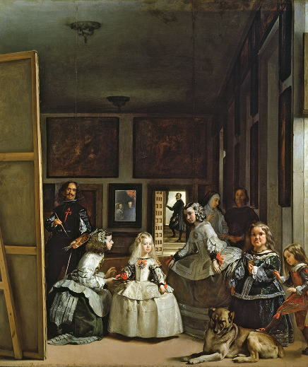

적용 활동
적용 활동
1 다음 그림 속 인물 중 하나를 서술자로 정해 짧은 이야기를 만들고, 모둠원들과 공유해 보자.

- 벨라스케스, 「시녀들」
벨라스케스의 「시녀들」은 스페인 왕실의 초상화를 그리고 있는 모습을 담은 작품이에요. 이 작품에 등장하는 인물들을 보면, 왼쪽의 큰 캔버스 앞에 그림을 그리는 화가가 서 있는데, 이 화가가 실제로 이 그림을 그린 벨라스케스예요. 그림 한가운데에는 어린 마르가리타 공주가 서 있고, 그녀의 양쪽에서 두 시녀가 시중을 들고 있어요. 오른쪽 구석에는 키가 작은 시녀와 개, 그리고 발로 개를 건드리는 어린 시종이 있어요. 맨 뒤 계단에는 왕비의 시종이 서 있고, 뒤편 거울에 스페인 국왕 펠리페 4세와 왕비 마리아나가 보여요.